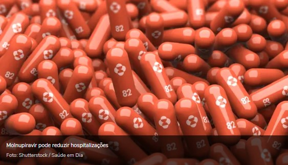

NOTÍCIAS
Crise da pandemia da Covid-19

29/05/2021 às 14h33
Muita gente que perdeu o emprego está assumindo funções diferentes e até começando novos empreendimentos para se sustentar;
Boa notícia: quase 500 cidades de Minas não tiveram mortes por Covid no mês de setembro
01/10/2021 às 14h10
A responsável pela queda dos óbitos é a vacinação contra a Covid-19: em quase 91% desses municípios, mais 60% de toda a população já foram vacinados pelo menos com a primeira dose.
Molnupiravir: conheça mais sobre o possível remédio contra Covid-19
14/10/2021 às 15h05
Infectologista esclarece dúvidas e revela otimismo com o medicamento que está em fase final de aprovação.
'Podemos acabar com a pandemia': secretário-geral da ONU defende plano global de vacinas
23/09/2021
“Por um lado, vemos as vacinas desenvolvidas em tempo recorde, uma vitória da ciência e da engenhosidade humana. Por outro lado, vemos esse triunfo desfeito da falta de vontade política, do egoísmo e da desconfiança”, lamentou o secretário-geral.
Covid-19: vacinados transmitem o vírus por menos tempo, diz estudo.
27/09/2021 às 15h29
Um estudo americano revelou que a transmissão do novo coronavírus (Sars-CoV-2) por pessoas vacinadas acontece por menos tempo do que por quem ainda não foi imunizado.
Mensagens de áudio da UNESCO-OMS contra a COVID-19.
As mensagens de áudio podem ser acessadas gratuitamente e transmitidas por estações de rádio públicas, privadas e comunitárias em várias partes do mundo.